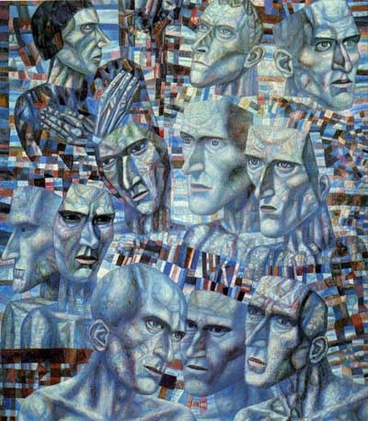

Я всегда считал, что жизнь наполнена смыслами. Но идея, что в основе всей человеческой идентичности лежит смыслообразование, как-то не приходила в голову.
То есть, эволюция в человеческом, антропологическом контексте — это эволюция смыслов, процесс разворачивания смыслообразования. И человек — есть человек, в той степени, в коей он необходимое звено этой цепи:
- Как арена — то есть пространство, где происходит игра. Место становления и борьбы идей.
- Как участник — тот, кто формирует смыслы, интерпретирует и транслирует их.
- Как инстанция — тот, на кого направлена энергия идеи, ее посыл.
Мы все арена (и по отдельности и вместе), мы все участники, мы все инстанция. Это ясно. Но как и в каком соотношении?
Если подумать, то:
П.1 раскрывается в форме фонового знания, то есть Conventional wisdom, как бы самоочевидных, но критически неосмысленных представлений.
П.2 раскрывается в виде осознанных действий по достижению целей или реализации (воплощению, провозглашению) принципов.
П.3 раскрывается в виде желаний.
Можно ли выйти за пределы этой игры? Я считаю, что в рамках «человеческого» — нет. Но вот конфигурировать эту матрицу можно по-разному. Не в формате объявлений и курсов в интернете, типа «Постижение космической мудрости и маникюр на дому»
. А просто самим фактом принятия, что «человеческое» — это смысловое, а значит к смыслам надо относится бережно, осторожно и с ответственностью. «Надо» — не кому-то и не не потому что так кто-то сказал, а конкретно мне. Потому что быть просто базой для статистики как-то малоувлекательно, а скорее всего ещё и вредно…. причём в этом случае молока точно не дадут.
Все наверное проходили «Котлован» Платонова в школе. Ощущение безысходности и обреченности от истории, тревожного неприятия «заочно живущего» Вощева, уходящего «в ночь» под мучительный свет звёзд вопрошающего неба. Уходящего, чтобы никуда не придти.
Сменилась наша социальная реальность. Но мучительный свет звёзд — никуда не делся. И с суровой высоты вопрошающего неба, закрадывается мне мысль, наша «траектория» часто не сильно отличается от пути, достигшего «дня тридцатилетия личной жизни» героя Андрея Платонова.

